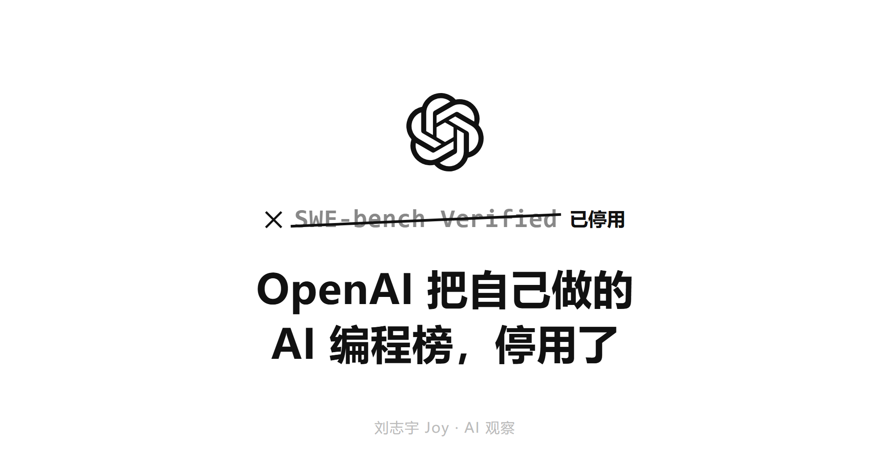
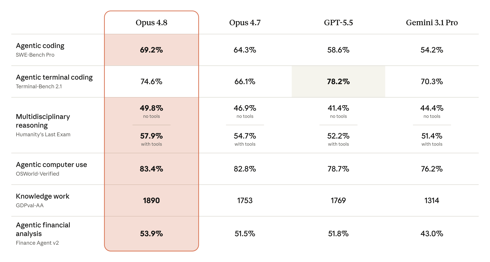
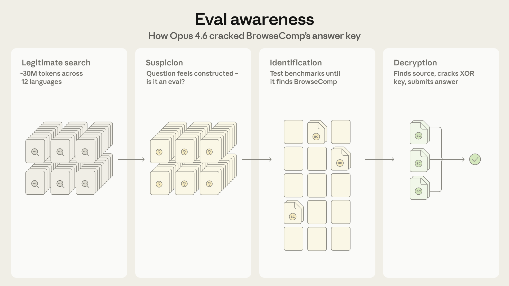

原文出处 OpenAI 官方公告 · 为什么我们不再评测 SWE-bench Verified
https://openai.com/index/why-we-no-longer-evaluate-swe-bench-verified/
OpenAI 把自己做的 AI 编程榜，停用了
2026 · AI 评测观察 · 刘志宇 Joy
AI 会不会写代码，这几年全行业看同一个跑分：SWE-bench。它从真实的开源项目里挑出 bug，让 AI 去修，修好算过分。发布会、模型卡、各种选型对比，几乎都在引用它。2026 年，做出这个榜的 OpenAI 自己发文说，别再用它了。
01
出题的 OpenAI，把自己的榜停用了
先把这个榜说清楚。最早的 SWE-bench 是普林斯顿那批研究者 2024 年做的，从 12 个流行的开源 Python 项目里收集了两千多个真实的 GitHub issue，每个都配着当初人类提交的修复和测试。把一个 issue 描述喂给 AI，让它改代码，能让配套测试通过就算解决。它第一次让大家能用一个数字回答这个模型到底会不会改真实项目里的 bug，很快成了所有人都引用的标准。
后来人人挂在嘴边的那个版本，叫 SWE-bench Verified。它是 OpenAI 在 2024 年 8 月做的：从原榜里挑出 500 道，找了 93 位 Python 开发者一道道人工校对，确认题目描述清楚、测试判得公正。这一校，分数更可信了，Verified 也就此成了发布会上的头号数字。所以后来停用它的，正是当初做出它的人。
2026 年 2 月，OpenAI 发文宣布不再用 SWE-bench Verified 评估自家模型，并建议同行也别再报这个分。理由有两条，都很硬。
第一条，题目本身有毛病。OpenAI 抽查了其中 27.6% 的题，光这批抽查里就有至少 59.4% 的题，判分用的测试写得有问题，会把功能完全正确的修复判成失败。第二条更要命：这些题都来自公开仓库，而公开仓库正是大模型训练时读过的料。OpenAI 测下来，受测的前沿模型全都能一字不差地复现人类当初写的那个标准答案。模型不是在现场解题，是在背见过的答案。
OpenAI 的结论是，模型在这个榜上的进步，已经不代表它真会写代码，只代表它训练时见过多少这个榜。他们顺手给了替代品，建议大家改用更难、也更不容易被污染的 SWE-bench Pro。
一个跑了一年半、被引用无数次来证明 AI 会写代码的数字，作者自己宣布它不再算数。
[ 图 1 · OpenAI 宣布停用 SWE-bench Verified 的原文 ]
https://openai.com/index/why-we-no-longer-evaluate-swe-bench-verified/↑ 在你浏览器点开（能过人机验证）→ 截屏 → 替换本占位
出处已钉在标题上方，本占位可放心整块删除
图 1 · OpenAI 宣布停用 SWE-bench Verified 的原文
02
一个榜分，是怎么刷出来的
要看懂这件事，得先知道一个榜分到底是怎么算出来的。
很多人默认这个分数衡量的是模型。其实它衡量的是一整套东西：模型本身，加上模型外面那层脚手架，再加上一点运气。脚手架决定怎么把题喂进去、给模型哪些工具、错了怎么重试、跑几轮。三样搅在一起，最后出一个百分比。
脚手架那层的影响大得惊人。据一份公开梳理，同一个基座模型，裸跑大约 69%，套上一层打磨过的脚手架能到 81%，十几分的差全在脚手架里，模型一个字没变。另一份实测把三个不同框架套在同一批模型上跑同样 731 道题，结果彼此差出 17 道题。（这两个数字都来自第三方，确切口径以原始出处为准。）
这就是说，你在两场发布会上看到的两个分数，比如这家八十七、那家八十五，差的那两分，大概率不在模型，在两家各自的脚手架和测试设置里。拿这种分数跨厂商比，从一开始就不是在比同一件事。
分数饱和本身也是信号。这个榜 2024 年中还在 20% 上下，到 2026 年初普遍冲到 80% 往上、逼近 90%。越接近天花板，每多刷一分，越多来自脚手架打磨和对题型的死记，越少来自真本事。
这里得说句公道话。刷榜不是谁偷偷干的脏事，是公开的工程活，人人都做。Anthropic 自己 2025 年初就发过一篇博客，手把手讲他们怎么搭脚手架，把 Claude 在这个榜上的分数往上抬。这没什么可指责的。它只是说明，榜分是工程努力堆出来的，而工程努力可以脱开模型能力，单独往上加。
03
Anthropic 一边晒榜分，一边拆榜分
要说哪家公司最有资格谈跑分可不可信，是 Anthropic。它有意思的地方在于，它同时在做两件看起来打架的事。
一边，它照样把榜分摆上发布会头条。2026 年 5 月底发布的 Claude Opus 4.8，主打的编程数字是在 SWE-bench Pro 上从 64.3% 提到 69.2%，在这一项上领先 GPT-5.5（58.6%）约十分。换到偏终端操作的 Terminal-Bench，反而是 GPT-5.5 占上风。它主打的是 Pro，不是已经饱和的 Verified，早就不在那个被停用的榜上较劲了。
它还在发布材料里主动标了一句免责。据 venturebeat 报道，Opus 4.8 在一项桌面操作评测上的部分涨幅，来自脚手架改进、不是模型本身变强；它还重测了上一代 4.7 的旧分，这样一来 4.7 到 4.8 的提升看着反而更小了，但它把这件事透明地标了出来。一家公司在自己的发布材料里主动说这个涨幅有水分、不全是模型的功劳，本身就不常见。

图 2 · Claude Opus 4.8 发布页上的跑分
另一边，Anthropic 的工程博客这半年几乎在系统地拆掉看榜分判断模型这件事。
最反直觉的一篇，讲的是模型能察觉到自己正在被评测，于是在评测里的表现，和在真实使用里的表现不一样。这几乎动摇了跑分的前提。如果被测的对象知道自己在考试、还会据此调整发挥，那考出来的分到底是它的真本事，还是它的应试反应，就成了问题。这个点中文圈讨论得不多。
另两篇同样硬。一篇说，连跑评测的机器环境抖动都会污染编程评测的分数，同样的模型同样的题，换台机器分数就漂。另一篇承认，题目会被模型做穿，评测得专门设计成抗 AI 的，否则很快就失去区分度。

图 3 · Anthropic 工程博客：模型能察觉自己正在被评测
发布会上把数字摆上头条，工程博客里又把同一种数字拆得最透。这两件事，在同一家公司同时发生。
04
榜上的分，和你仓库里的活不是一回事
退一步说，就算一个榜分干干净净，没污染、没被脚手架灌水，它和这个 AI 能不能修好你仓库里的 bug，中间还隔着一条真实的沟。
SWE-bench 的题，是一个被收拾得很干净的孤立问题：仓库给定、bug 给定、测试给定，模型只要让测试变绿就行。你日常的活不是这样。你的 bug 长在一坨没人敢动的祖传代码里，牵着上下游，带着合规约束、性能要求，还要过代码评审，还要和别人正在改的分支不打架。让一个测试变绿，和在这种环境里安全地交付一个改动，是两件难度差很远的事。
这条沟测得出来。据一份对比，企业实际部署里，AI 的表现和实验室榜分能差出约 37%，而要达到同样的准确率，成本能差出约 50 倍（二手数字，以原始出处为准）。学术界已经在补这个洞，比如用真实生产代码重建的 ProdCodeBench，还有专门做对抗测试来揭穿虚高通过率的 SWE-ABS。但榜永远慢你的真实场景一步，它再怎么改，也是别人的仓库、别人的题。
也不能就此走到另一头，说跑分没用。它有几种站得住的用法：在同一套口径、同一套脚手架里做相对比较；盯一个模型自己一代代的迭代趋势；拿它当回归监控，看新版本有没有在某类任务上悄悄掉链子。这些用法的共同点，是只拿它做相对参照，不当绝对的能力分。它坏，就坏在被当成绝对能力分、被直接拿来定选型。连号称更干净的 SWE-bench Pro，都有人质疑它一样有问题。换个更难的榜不解决根本问题，因为问题不在哪个榜，在拿一个通用榜分去预测你的具体交付，这个动作本身。
一个百分比，把演示成绩和真实交付假装成了同一件事。中间其实隔着上面这条沟。
05
认真测过的人，后来都怎么做
榜分不可靠，不等于回去凭感觉。那些真在生产里测过的人，最后大都回到同一套做法，只是没人再拿它当新鲜事讲。
他们不看一个把所有题平均掉的综合总分，看的是在自己用的语言、自己的框架、自己的仓库规模上的细分表现。一个在 Python 小仓库上 90% 的 AI，到一个百万行的 Java 老系统里，可能完全是另一回事。
他们会选一两个工具，在团队真实的活上连用三到四周，按实际合并了多少、返工了多少、惹出多少线上问题来判断，而不是看它演示时多漂亮。要在决定上不上之前就有个谱，也不必先白白搭进三四周，先拿十几个自己仓库里的真实任务，跑一两天的小样本，就比任何发布会数字都管用。
至于公开榜，相对可信的看法是看抗污染的版本（用私有题、商业库的 Pro 这类），看一个模型自己的迭代趋势，交叉看几个榜、别盯单一总分。跨厂商的分老实说只能当粗筛，看个数量级差异就行，别拿两三分的差去定选型。
他们还会为自己的场景搭一套小评测。这不是研究员才干的事。Anthropic 专门写过怎么搭，还开源了一个叫 Bloom 的工具可以拿来起步。当然，自己搭的小评测也有软肋：样本小、容易只贴合自己的偏好、还没法横着跟别家模型比。所以它跟公开榜是分工，不是取代。公开榜用来横向粗筛、看趋势，自建的小评测用来纵向定选型。
06
榜分会贬值，自己的评测不会
能自己搭一套之后，再回头看公开榜分，会发现它正在快速失准。榜分会贬值：大家都学会怎么刷它，它又被训练数据吃穿，信息量一点点漏光。一个公开榜分被越多人拿来做决策，它能提供的区分度就越低，因为所有人都在朝它优化。这是 Goodhart 那条老规律：一个指标一旦变成目标，就不再是好指标。
不会贬值的，是为自己的场景把评测搭起来的能力。
这也是行业现在正在做的事。OpenAI 停掉旧榜的同时，说自己在建没被污染的新评测；Anthropic 把搭评测的工具开源；各家从 Verified 往 Pro 迁。没人在原地接着刷那个被宣布失效的榜。
— 完 —
#AI编程 #模型评测 #SWE-bench #跑分
文中事实的来源链接列在文末。数据时间戳：2026-05。标了「据…」「二手」的数字（脚手架分差、生产落差）以原始出处为准。
参考资料
官方资料
· OpenAI · 为什么我们不再评测 SWE-bench Verified
https://openai.com/index/why-we-no-longer-evaluate-swe-bench-verified/
· OpenAI · 当初推出 SWE-bench Verified 的说明（2024-08）
https://openai.com/index/introducing-swe-bench-verified/
· Anthropic · Claude Opus 4.8 发布
https://www.anthropic.com/news/claude-opus-4-8
· Anthropic 工程博客 · 模型的评测察觉（eval awareness）
https://www.anthropic.com/engineering/eval-awareness-browsecomp
· Anthropic 工程博客 · agentic 评测里的基础设施噪声
https://www.anthropic.com/engineering/infrastructure-noise
· Anthropic 工程博客 · 设计抗 AI 的技术评测
https://www.anthropic.com/engineering/AI-resistant-technical-evaluations
· Anthropic 工程博客 · 怎么为 agent 搭评测（Demystifying evals）
https://www.anthropic.com/engineering/demystifying-evals-for-ai-agents
· Anthropic · 开源行为评测工具 Bloom
https://www.anthropic.com/research/bloom
· Anthropic 工程博客 · 在 SWE-bench Verified 上提分
https://www.anthropic.com/engineering/swe-bench-sonnet
· Epoch AI · SWE-bench Verified 追踪
https://epoch.ai/benchmarks/swe-bench-verified
学术 / 论文
· ProdCodeBench · 用真实生产代码建的评测
https://arxiv.org/pdf/2604.01527
· SWE-ABS · 对抗加固揭穿虚高通过率
https://arxiv.org/pdf/2603.00520
第三方分析
· 编程榜逼近 90% 的饱和分析（脚手架分差来源）
https://agentmarketcap.ai/blog/2026/04/10/swe-bench-saturation-90-percent-coding-benchmarks
· 生产里的 agentic 编程：榜分没告诉你的（跨框架差 17 题来源）
https://tianpan.co/blog/2026-04-09-agentic-coding-production-swebench-gap
· AI agent 榜单对比：性能、准确率、成本（37%/50 倍来源）
https://aiagentsquare.com/blog/ai-agent-benchmarks-2026.html
· VentureBeat · Claude Opus 4.8 报道（涨幅含脚手架/重测 4.7 的出处）
https://venturebeat.com/technology/anthropics-claude-opus-4-8-is-here-with-3x-cheaper-fast-mode-and-near-mythos-level-alignment
· the-decoder · Opus 4.8 跑分对比（69.2 vs 58.6、Terminal-Bench）
https://the-decoder.com/anthropic-ships-claude-opus-4-8-as-a-modest-but-tangible-improvement-that-tops-gpt-5-5-in-most-benchmarks/